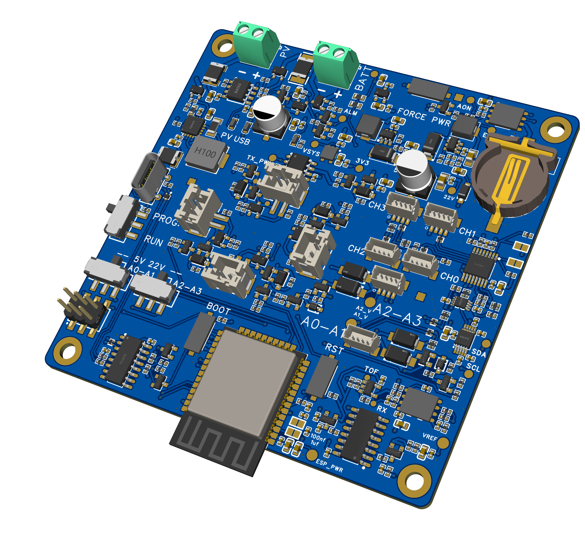
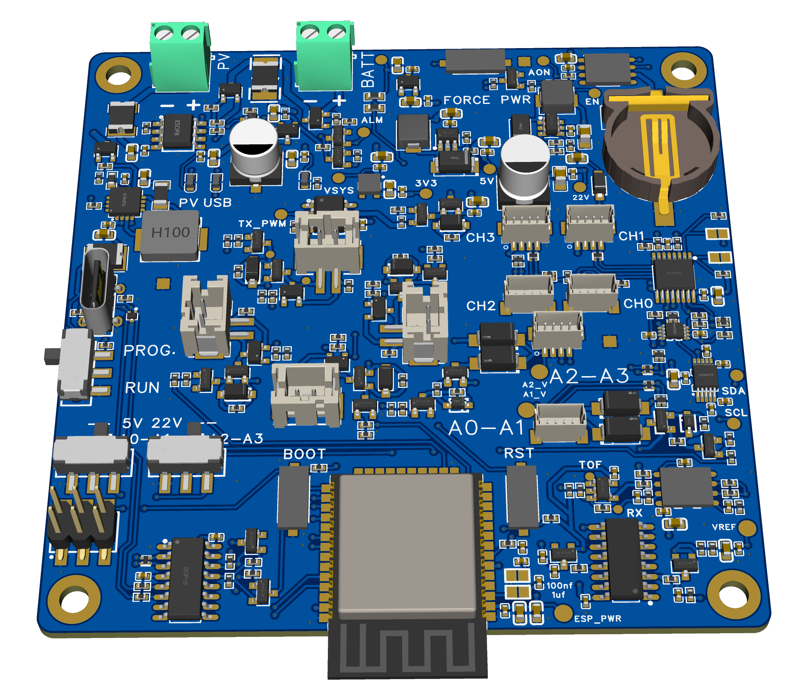

The problem
Ecologists often need climate data at the scale organisms actually experience, from centimeters to meters, not just from standard weather stations. Conventional stations are excellent for regional trends, but they can miss the strong local variation created by vegetation, soil, shade, and airflow. In heterogeneous landscapes such as solar PV farms, these fine-scale differences can be large and biologically important.
Why it matters
Microclimate drives physiology, behavior, habitat use, and survival. If meter-scale variation is not resolved, key mechanisms behind ecological responses to climate change, restoration outcomes, and habitat quality can be missed. A practical, affordable way to deploy many sensors across complex sites is essential for better ecological inference and management.
My approach
I built a practical monitoring system that is straightforward to deploy in field ecology projects.
Distributed network architecture: Multiple low-power sensor nodes send data wirelessly to a central mothership using ESP-NOW.
Centralized, field-friendly operation: The mothership provides time synchronization, deployment control, and continuous CSV logging to SD card through a local web dashboard.
Modular sensing: Core measurements include air temperature and humidity, PAR, and ultrasonic wind speed and direction, with expansion paths for soil and other sensors via standard interfaces.
Reproducible design: Custom PCB, firmware, and a custom 3D-printable enclosure are documented as an integrated system to support transparent replication and adaptation.
Deployment-focused engineering: I separated airflow-sensitive wind measurement geometry from electronics and power hardware in the enclosure design to reduce bias and improve field robustness.
Current status
The project is currently in research and development.
Working now: Firmware flow is tested and working with off-the-shelf modules.
Current hardware: Custom PCB is currently in development.
Mechanical design: Custom 3D-printable enclosure is complete.
Next phase: Board bring-up and basic testing.
PCB renders
.png){kind=link}

.png){kind=link}
